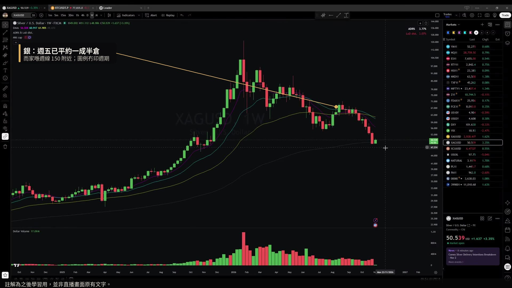
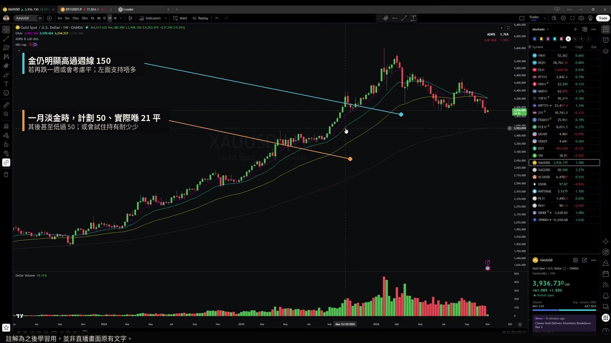

概要
銀先到目標帶，金則仍在更高位置
1:12:10 講金銀。週五已經在銀平咗大約 15% 倉位，而家銀到咗週線 150；金仍然明顯高過週線 150。若再跌一週，或會考慮平金；又或者銀去到左邊擺動低。金呢段階段二升勢，左邊支持不多，下一帶大概才是週線 150，他也不確定自己能否等到呢段下跌。回顧一月淡金：計劃係看到 50 先平，實際喺 21 就走，其後價格甚至低過 50。所以或會試住持有耐少少。
圖一
銀：週五已平一部分，而家到週線 150
直播 1:12:30

原話
And gold and silver, I think I already took some profits on silver on Friday. I took around like I think 15% of my positions and it's now at this 150 weekly already. Gold is still well above the 150 weekly. So I think I would cover my short if we get another week down, maybe.
金同銀，銀我週五已經平咗一部分，大概 15% 倉位，而家已經到呢條週線 150。金仍然明顯高過週線 150。所以若再跌一週，我或會平掉淡倉。
點樣讀
15% 同週線 150 都係原話。圖例冇印週期，註解只指較慢週線均線嘅位置。睇唔到實際成交。
圖二 · 主圖
金仍高過週線 150；一月曾經提早喺 21 走
直播 1:13:10

原話
I don't know, maybe silver reaching this swing low, because there's not much support on the left side of this gold uptrend, the stage two bull run. The next one is really probably like at the 150 EMA on the weekly, but I don't know I can really wait for this drop. Actually last time when I shorted the gold on January, I think I cover it into the 21 instead of the 50 EMA that I plan to cover, and it indeed really even overshoots the 50 EMA. So maybe I'll try to hold it a little bit longer, maybe I will try.
或者等銀去到呢個擺動低，因為金呢段階段二升勢，左邊支持唔多。下一帶大概就係週線 150 EMA，但我唔知自己能否等到呢段跌。其實上次一月淡金，我係在 21 就平咗，而唔係計劃中嘅 50 EMA，後來真係再低過 50 EMA。所以或者今次我會試住持有耐少少。
點樣讀
呢度有一個檢討：計劃同實際離場唔同，價格其後行得更遠。所以今次或會試住持有耐少少。呢句係態度，唔係新規則。
圖例冇印 21、50、150。註解只跟口中講法同均線位置。
附註
注意事項
- 畫面係 XAGUSD、XAUUSD，口中叫 silver、gold。15% 只係原話約數。
- 圖例冇印均線週期。1:12:08–1:12:12 曾快速閃過 AXTI、SNDK、SLV，唔單獨成科。
免責聲明：呢份係教育拆解，唔係投資建議，亦唔好當作買賣指示。